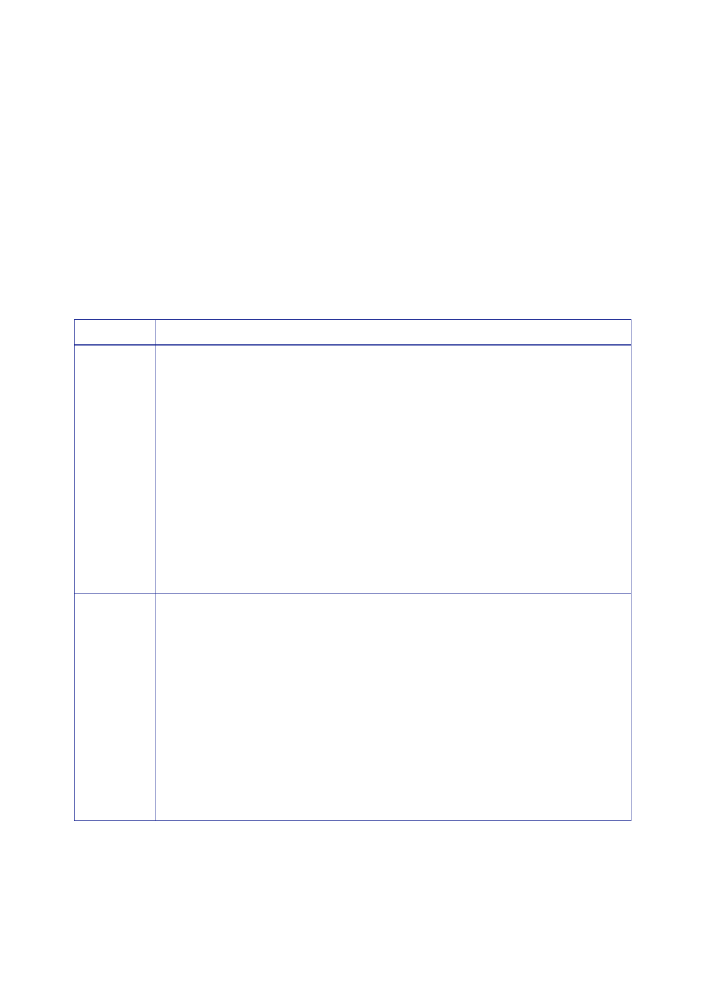

3.5 |
Development of UK strategy and options, September to November 2002
–
the
negotiation of resolution 1441
•
“Ultimately”
the choice lay with Iraq “whether to take the peaceful route
to
disarmament”.
The UK hoped it would do so: disarmament “by peaceful
means”
remained
“the UK’s firm preference”.
•
If Iraq
chose “defiance and concealment, rejecting the final opportunity”
it had
been given,
the UK “together, we trust with other Members of the
Security
Council”
would “ensure that the task of disarmament required by the
resolutions”
was
“completed”.
851.
Key points
made by other members of the Security Council in their EOV are set
out
in Table 1
in the order in which they were made.
Country
USA
France
Extracts
from Explanations of Vote (EOV)
“By this
resolution we are now united in trying a different course … to send
a clear
message to
Iraq insisting on disarmament … or face the
consequences.
“… This
resolution is designed to test Iraq’s intentions … Every act of
Iraqi
non‑compliance
will be a serious matter, because it would tell us that Iraq has
no
intention
of disarming.
“… this
resolution contains no ‘hidden triggers’ and no ‘automaticity’ with
respect to the
use of
force. If there is a further Iraqi breach, reported to the Council
by UNMOVIC,
the IAEA or
a Member State, the matter will return to the Council for
discussions as
required in
paragraph 12. The resolution makes clear that any Iraqi failure to
comply
is
unacceptable and that Iraq must be disarmed … If the Security
Council fails to act
decisively
in the event of further Iraqi violations, this resolution does not
constrain any
Member
State from acting to defend itself against the threat posed by Iraq
or to enforce
relevant
United Nations resolutions and protect world peace and
security.”
“The
Resolution strengthens the role and authority of the Security
Council. That was
the main
and constant objective of France … reflected in our request that a
two‑stage
approach be
established and complied with, ensuring that the Security Council
would
maintain
control of the process at each stage.
“That
objective has been attained: in the event that … UNMOVIC or the …
IAEA reports
to the
Security Council that Iraq has not complied with its obligations,
the Council
would meet
immediately to evaluate the seriousness of the violations and draw
the
appropriate
conclusions. France welcomes the fact that all ambiguity on this
point and
all
elements of automaticity have disappeared from the
resolution.
…
“This
resolution represents a success for the Security Council and the
United Nations …
347